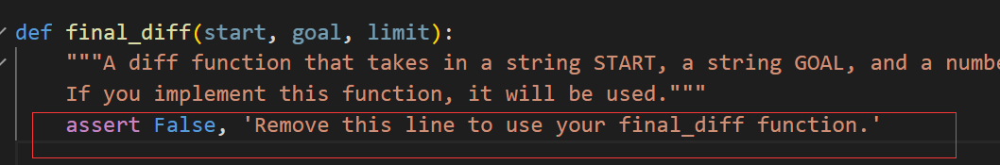

syntax
- list.index(x[, start[, end]])
完成project2 cats

链接
一些语句，看了知道，不看死想也想不到

- 巧妙处理

- 原来这样可以写省略，而不用#
- 这个东西可以写def框架，不报错
目前下一步
-
18DataThu看vedio
发现有一些章节可能要补上，有一些可能看了视频能跳过
目前的textbook 开始至2.3都是一句一句看然后Python尽量实现或理解，
是2.3.6Trees实在太tm抽象开始找其他如youtube或者18summer，之前都是2022
后面的看情况把，能做完作业和Project就过了，也不求逐字过
前期的阅读给了我一些基本术语的了解能力，后面看视频也差不多了
做下一个ants的时候要到object_oriented了22的这个编排实在是shit inMyOpinion